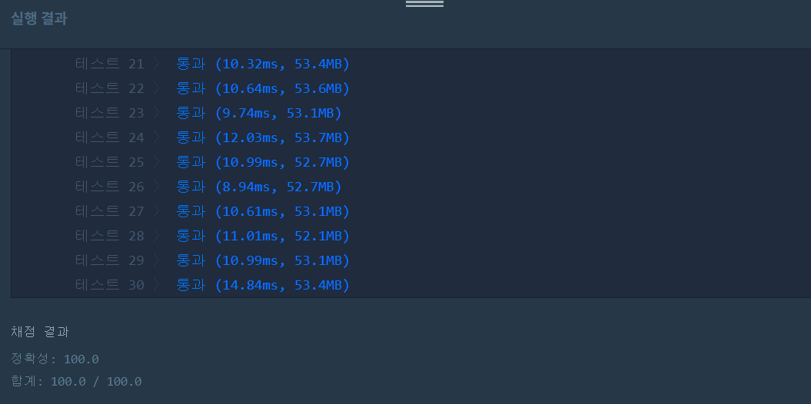

👀 문제
https://programmers.co.kr/learn/courses/30/lessons/67257
👊 도전
1. 설계
- 연산자의 우선순위 설정을 위해 순열을 DFS로 구현한다. 완성된 우선순위는 HashMap<Character, Integer>에 저장한다.
- 우선순위에 맞춰 식을 후위식으로 바꾼다. 숫자는 StringBuilder, 연산자는 Stack을 이용하여 최종 식을 ArrayList
형에 넣는다. - list를 뽑으면서 후위식을 계산한다. 숫자를 Stack에 저장하여 값을 계산한다.
- 마지막 Stack에 남아있는 값이 연산 결과이다. 이들의 절댓값 중 가장 큰 값을 answer로 리턴한다.
2. 구현
1
2
3
4
5
6
7
8
9
10
11
12
13
14
15
16
17
18
19
20
21
22
23
24
25
26
27
28
29
30
31
32
33
34
35
36
37
38
39
40
41
42
43
44
45
46
47
48
49
50
51
52
53
54
55
56
57
58
59
60
61
62
63
64
65
66
67
68
69
70
71
72
73
74
75
76
77
78
79
80
81
82
83
84
85
import java.util.*;
/**
*
* @author HEESOO
*
*/
class Solution {
char[] oper={'+','-','*'};
boolean[] visit;
HashMap<Character, Integer> map;
long answer;
public long solution(String expression) {
answer = 0;
visit=new boolean[3];
map=new HashMap<>();
perm(0, expression);
return answer;
}
public void perm(int idx, String exp){
if(idx==3){ // 우선순위 세팅 완료
ArrayList<String> list=postfix(exp); // 우선순위에 맞춰 후위식 변환
long ret=calculate(list); // 결과 값
answer=Math.max(answer, Math.abs(ret));
return;
}
for(int i=0;i<3;i++){
if(visit[i]) continue; // 이미 사용한 연산자
visit[i]=true; // i를 idx번째 우선순위로 사용
map.put(oper[i], idx);
perm(idx+1, exp); // idx+1번째 우선순위 세팅
visit[i]=false; // i를 idx번째로 사용하지 않는 경우
}
}
public long calculate(ArrayList<String> list){
Stack<Long> st=new Stack<>(); // 숫자 저장
for(String s:list){
if(s.equals("+")){
long b=st.pop();
long a=st.pop();
st.push(a+b);
}
else if(s.equals("-")){
long b=st.pop();
long a=st.pop();
st.push(a-b);
}
else if(s.equals("*")){
long b=st.pop();
long a=st.pop();
st.push(a*b);
}
else st.push(Long.parseLong(s));
}
return st.pop(); // stack에 남아있는 마지막 값이 결과값
}
public ArrayList<String> postfix(String exp){
ArrayList<String> result=new ArrayList<>(); // 후위식
StringBuilder num=new StringBuilder(); // 숫자
Stack<Character> st=new Stack<>(); // 연산자 저장
for(int i=0;i<exp.length();i++){
char ch=exp.charAt(i);
if(ch=='+' || ch=='-' || ch=='*'){ // 연산자인 경우
result.add(num.toString()); // 현재까지의 숫자를 result에 저장
num.setLength(0); // 다음 숫자 만들기 위해 초기화
// 후위식 코드
while(!st.isEmpty() && map.get(st.peek())>=map.get(ch))
result.add(st.pop()+"");
st.push(ch);
}
else num.append(ch); // 숫자인 경우
}
// 아직 result에 저장되지 못한 값들 체크
if(num.length()>0) result.add(num.toString());
while(!st.isEmpty()){
result.add(st.pop()+"");
}
return result;
}
}
3. 결과
 🤟 성공 🤟
4. 설명
- 연산자의 우선순위를 정한다
- 우선순위는 HashMap<Character, Integer> 형으로 저장하여 탐색하기 쉽도록 한다.
- 우선순위는 순열을 이용한다(DFS).
- perm()의 파라미터 idx는 우선순위를 뜻한다. 숫자가 클수록 우선순위가 높다.
- idx==3이면 우선순위 세팅이 끝난 것이므로, 이에 맞춰 후위식을 만들고 계산한 값을 리턴받아 answer과 비교하여 조건에 맞게 저장한다.
- 후위식으로 변환한다
- 우선순위에 따라 만들어지는 후위식이 모두 다르다는 것을 조심해야 한다.
- String exp를 charAt()하여 한 문자씩 뽑을 것이기 때문에 두 자리 이상의 숫자는 잘릴 수 있다. 따라서 StringBuilder num을 이용하여 숫자는 따로 연결해줘야한다.
- charAt(i)가 연산자 중 하나라면 지금까지 만들어 놓았던 num을 result에 넣는다. 그리고 다음 사용을 위해 초기화한다.
- 연산자는 스택의 top을 확인한다. top 우선순위<내(ch) 우선순위여야 스택에 push할 수 있다.
- 아니라면, 조건에 만족할 때까지 top을 pop한다. pop한 값은 result에 넣는다.
- for문 순회가 끝나면 num, st을 확인하여 아직 result에 저장되지 못한 값이 있는지 확인해야 한다.
- 후위식은 연산자가 끝에 있는 식이므로, 숫자를 먼저 list에 넣고, 그 다음 연산자 스택을 확인한다.
- 식을 계산한다
- 일단 연산자가 나오기 전까지는 숫자를 따로 저장해두어야 한다. 또한 연산자 이전의 두 값을 뽑아야 하기 때문에 Stack을 쓴다.
- 숫자면 stack에 push, 연산자라면 스택의 두 값을 꺼내 알맞게 계산한 후 다시 스택에 넣는다.
- 마지막에 스택에 남아있는 값이 최종값이 된다.
- 계산할 때 주의해야 할 점은 계산 값이 int형을 벗어날 수 있다는 것이다.
- 숫자 자체는 0~999 사이의 값이지만, 이를 더하고 곱하는 과정에서 int형을 벗어날 수 있다. 따라서 이전까지는 int형으로 숫자를 관리했더라도, 계산할 때는 long으로 쓴다.
5. 성능
시간 복잡도: O(n)
- perm() O(3!) + postfix() O(n) + calculate() O(n) = O(n)